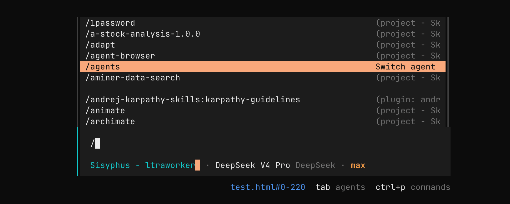
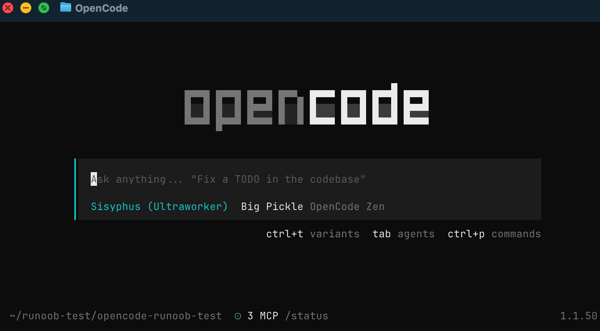

OpenCode TUI（ターミナルインターフェース）
OpenCode は、コマンドライン上で AI と効率的に協調開発を行うための対話型ターミナルインターフェース（TUI、Terminal User Interface）を提供しています。
TUI は OpenCode の中心的な使用方法であり、すべてのコード分析、修正、実行はこのインターフェースを通じて行われます。
OpenCode TUI は、本質的にはコマンドを実行できる AI 対話ターミナルであり、開発、コマンドライン、AI を融合させたものです。
すべての TUI コマンドはスラッシュを使用して/呼び出します。
TUI の入力ボックスに/と入力すると、関連するコマンドが一覧表示されます：

OpenCode TUI コマンド
以下は OpenCode TUI コマンドの表です：
| コマンド | 機能説明 | ショートカットキー |
|---|---|---|
/connect |
LLM プロバイダーを追加し API キーを設定 | — |
/compact (/summarize) |
現在のセッションのコンテキストを圧縮 | ctrl + x → c |
/details |
ツール実行詳細の表示を切り替え | ctrl + x → d |
/editor |
外部エディターを開いてメッセージを入力 | ctrl + x → e |
/exit (/quit / /q) |
TUI を終了 | ctrl + x → q |
/export |
現在の会話を Markdown としてエクスポート | ctrl + x → x |
/help |
ヘルプパネルを開く | ctrl + x → h |
/init |
AGENTS.md を作成/更新 | ctrl + x → i |
/models |
利用可能なモデルを一覧表示 | ctrl + x → m |
/new (/clear) |
新規セッション作成 | ctrl + x → n |
/redo |
元に戻された操作を/undoやり直す |
ctrl + x → r |
/sessions (/resume / /continue) |
セッション一覧と切り替え | ctrl + x → l |
/share |
現在のセッションを共有 | ctrl + x → s |
/themes |
テーマの一覧表示/切り替え | ctrl + x → t |
/thinking |
モデルの推論プロセスの表示/非表示 | — |
/undo |
直前のメッセージを元に戻す（ファイル変更を含む） | ctrl + x → u |
/unshare |
セッションの共有をキャンセル | — |
TUI コア操作の補足（スラッシュコマンド以外）
| タイプ | 構文 | 説明 |
|---|---|---|
| 起動 | opencode |
現在のディレクトリで TUI を起動 |
| ディレクトリを指定 | opencode /path |
指定したプロジェクトを開く |
| ファイル参照 | @file |
あいまい検索してファイル内容を注入 |
| コマンド実行 | !command |
shell コマンドを実行して結果を返す |
OpenCode の TUI は、本質的にはLLM + プロジェクトコンテキスト + Git 状態管理 + コマンドパレットの複合インタラクションレイヤーです：
/→ 動作の制御（IDE のコマンドパレットに類似）@→ コンテキストの注入（ファイルレベルの RAG）!→ 環境操作の実行（Shell ツール呼び出し）ctrl+x→ 効率的なクイック操作のプレフィックス
一、TUI を起動する
1、現在のディレクトリで起動
opencode
もしEACCES: permission denied, open ''という権限エラーが発生した場合は、ディレクトリの権限を修復できます：
sudo chown -R $(whoami) ~/.localその後、以下を実行します：
chmod -R 755 ~/.localより強引な方法として、直接sudo：
sudo opencode
を使用すると、現在のプロジェクトがワークディレクトリとして自動的に読み込まれます：

2、プロジェクトディレクトリを指定して起動
opencode /path/to/project
プロジェクトの素早い切り替えに便利です
二、基本操作
TUI に入ると、自然言語で直接入力できます：
このプロジェクトの構造を手早く要約してください
OpenCode がプロジェクトコードを考慮して分析結果を返します：

三、ファイル参照（コア機能）
次のように@を使用してプロジェクト内のファイルを参照できます：
这个项目的认证逻辑是如何实现的？查看 @packages/functions/src/api/index.ts
特徴：
- ファイルパスのあいまい検索をサポート
- ファイル内容を自動読み込み
- コードをコピーする必要がない
初めて見るコードを読むのに最適
四、Bash コマンドの実行
を押すと!shell モードに切り替わり、そのモードで入力した内容は shell コマンドとして実行されます：
!
コマンドを実行：
ls -la

実行結果は自動的に会話のコンテキストに追加されます。
これにより、AI に質問しながらシステムコマンドを実行できます。
五、スラッシュコマンド（/ コマンド）
と入力すると/組み込みコマンドを実行できます。例：
/help
ヘルプパネルを開く。
よく使うコマンド一覧
| コマンド | 説明 |
|---|---|
| /connect | モデル API を設定 |
| /models | 利用可能なモデルを表示 |
| /init | プロジェクト設定を初期化（AGENTS.md を生成） |
| /new | 新規セッション作成 |
| /sessions | セッション切り替え |
| /undo | 変更を元に戻す（コードを含む） |
| /redo | 変更をやり直す |
| /share | 現在の会話を共有 |
| /export | 会話を Markdown としてエクスポート |
| /exit | OpenCode を終了 |
六、ショートカットキー（効率向上）
OpenCode はショートカットキー操作をサポートしています：
| 機能 | ショートカットキー |
|---|---|
| コマンドパレット | Ctrl + X → H |
| 新規セッション作成 | Ctrl + X → N |
| 元に戻す | Ctrl + X → U |
| やり直す | Ctrl + X → R |
| モデル一覧 | Ctrl + X → M |
説明：
- Ctrl + X はデフォルトの「プレフィックスキー」です
- Vim のようなショートカットキーモード
七、エディタ連携（/editor）
複雑なプロンプトを作成するには外部エディターを使用できます：
/editor
事前の設定が必要です：
export EDITOR="code --wait"
対応エディター：
- VS Code（code）
- Cursor（cursor）
- Vim / Neovim
- Nano
八、セッション管理
セッションを表示
/sessions
新規セッション作成
/new
複数のタスクを切り替えることができます
九、元に戻すとやり直す（重要）
元に戻す
/undo
機能：
- メッセージを元に戻す
- コードの変更をロールバック
やり直す
/redo
注意：
- Git によるコード変更管理に依存
- プロジェクトで Git を有効化することを推奨
十、TUI設定
設定ファイルで動作をカスタマイズできます：
opencode.json
例：
{
"tui": {
"scroll_speed": 3,
"scroll_acceleration": {
"enabled": true
}
}
}
説明：
- scroll_speed：スクロール速度
- scroll_acceleration：スムーズスクロール（オン推奨）
十一、使用上のアドバイス
- 積極的に@を使用してファイルを参照し、正確性を高めましょう
- 複雑なタスクは最初に計画モードを使用し、Tabキーでモードを切り替えます。
- 小さなステップで反復し、一度にあまり複雑なことをしないようにしましょう。
- 重要な操作の前に Git でコミット済みであることを確認しましょう。
クリックしてノートを共有
<p style="font-size:14px;">ノートは本記事の内容を拡張したものである必要があります！</p><br> <p style="font-size:12px;"><a href="../tougao.html" target="_blank">記事投稿は、ここをクリックしてください</a></p> <p style="font-size:14px;"><a href="../w3cnote/runoob-user-test-intro.html" target="_blank">登録招待コードの取得方法</a></p> <h3 class="text-muted"><i class="fa fa-info-circle" aria-hidden="true"></i> ノートを共有する前に<a href=";.html" class="runoob-pop">ログイン</a>が必要です！</h3> <p><a href="../w3cnote/runoob-user-test-intro.html" target="_blank">登録招待コードの取得方法</a></p>